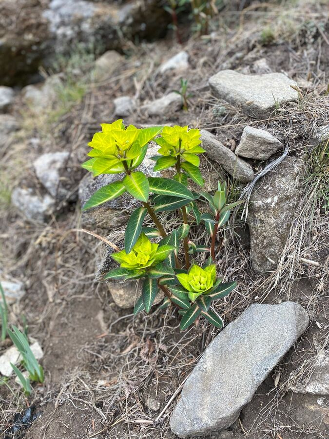

4.000 metrenin biraz altındaki gece biraz daha iyiydi. Ama odada hâlâ soğuktu. İlk kez çift kişilik yatak almışken ikimizin de tam o sırada çok ağır nezle olması da trajik denebilir. Üstelik buz gibi bir odada iki kişi çift kişilik bir yatakta iki ayrı uyku tulumunda yatmak ne kadar (gayri)romantik? Boğaz ağrısını hiç saymıyorum bile. İnsan, bizim gibiler güya en sıcak aylar olan nisan/mayısta bile bütün romantizmi donduruyorken Nepallilerin burada, yukarıda nasıl çoluk çocuk sahibi olduğunu merak ediyor.
Tam saat 7'de yeniden yola çıktık. Yeti Inn lodge güzeldi ama maalesef vadinin en dip noktasındaydı. Oradan çıkmak için önce başta yokuş yukarı gitmemiz gerekti. Sonra ise uzun süre yokuş aşağı. Ortalık yeşillendi. Daha çok ağaç vardı. Her yerde yeniden ormangülleri büyüyordu. Hatta bazıları hâlâ çiçek açmıştı.
3,5 km'yi biraz geçince maalesef Mong La'ya dik bir yokuş başladı. Bunun için bir saatten fazla, belki daha da fazla zamana ihtiyacımız oldu. Yolun en çok güç tüketen kısmıydı. 9:40'ta yukarıya varmıştık. Orada önce mola verip çay içtik.

Yolun geri kalanı çoğunlukla yokuş aşağıydı. Bir sonraki ara hedef Kyangjuma'ydı; gidişte oradan sağa (aşağı, nehre doğru) Tengboche Manastırı'na sapmıştık. Şimdi yüksekte kaldık ve yaşlı Şerpa'nın yaptığı yoldan yürüdük. Yine çok sayıda çiçek vardı.

Bütün etap yorucuydu, ama Namche Bazaar'daki eski otelimize uğrayabildiğimizde bir o kadar sevindik. Eski, duşlu odamızı aldık ve doya doya duş aldık. Bu bize yeni güç verdi.
Naran ve ben sonra dükkânlara inip öksürük şurubu, pastil, elma ve kurabiye aldık.
Ardından Yeşim ve ben biraz dinlendik. Akşam yemeğinden sonra yine erkenden yattık. Ben de bugünlük burada bitiriyorum. İyi geceler.